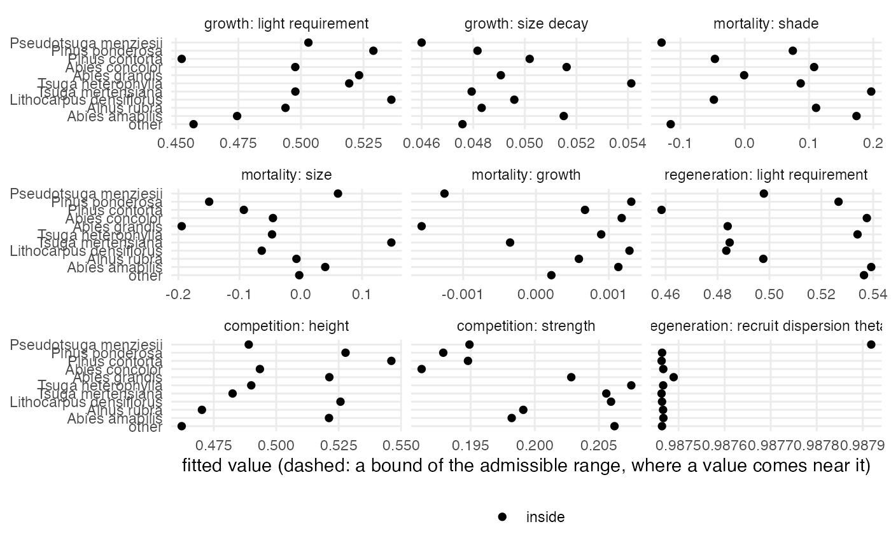
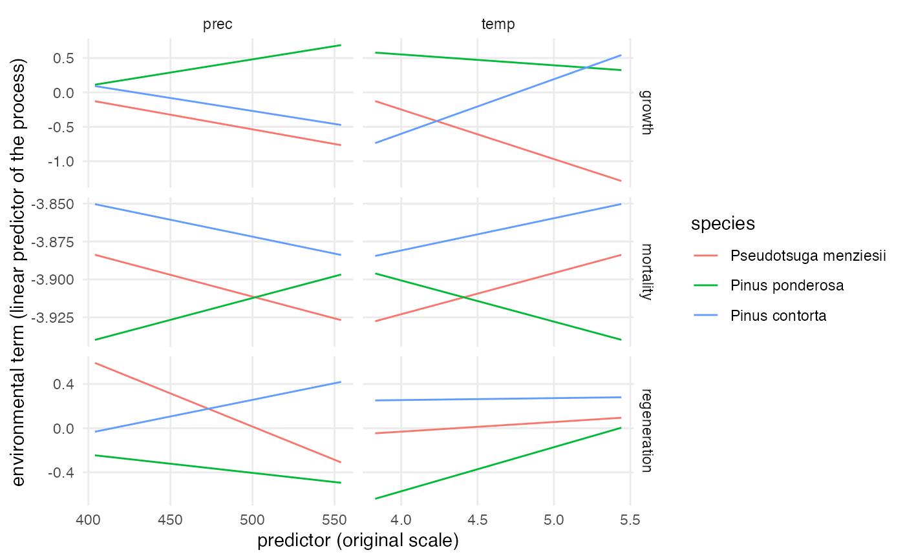

Draws the fitted parameters themselves, per species, on the scale on which
they enter the model – no simulation is involved. By default the process
parameters; pars = "env" switches to the environmental niches.
Arguments
- x
- pars
Which parameters:
"process"(default) the species-specific process parameters,"env"the environmental niches. The argument and its two values are those of theplot()method of FINN 0.1.0, so a call such asplot(m, pars = "env")keeps working.- species
Species numbers to draw;
NULL(default) all.- env
Table whose predictor ranges the niches span, in the format of the
envoffit()(see finn_data);NULL(default) the environment the model was fitted on. Only used withpars = "env".- species_names
Species names for the labels: a character vector in species order, a vector named by species number, or a table with
speciesandspecies_name.NULL(default): the namesfit()kept from thespecies_namecolumn of the data, else "species 1", "species 2", ...- parameter_names
Names of the species-specific parameters of a process function of your own, as a list by process, e.g.
list(mortality = c("shade", "size", "growth")).NULL(default): the documented names for FINN's own process functions (growth(),mortality(),regeneration(),regeneration_capped(),competition()), else "parameter 1", "parameter 2", ...- ...
Unused.
Details
Process parameters (
pars = "process", the default): one panel per parameter of the growth, mortality, regeneration and competition processes, and the recruit dispersiontheta; one point per species, on the constrained scale the process function uses, the axis spanning the fitted values. A bound of the admissible range set by the argumentslowerandupperofcreateProcess()(forthetathe floor, its argumenttheta_floor) is drawn as a dashed line where a value comes near it, and a species whose parameter ended the fit at a bound is an open triangle (seecreateProcess()on what such a parameter means).Environmental niches (
pars = "env"): for each process whose environmental response is linear (nohidden, no customNN, notcreateHybrid()), the fitted environmental term of every species across the range each predictor covers inenv, with the other predictors held at their mean. The curve is the linear predictor the process function receives (pred): for FINN's default functions growth and regeneration useexp(pred)and mortalityplogis(pred + ...), so a curve higher up means faster growth, more recruits or more deaths. The x axis is on the original scale of the predictor; the stored standardisation offit()is applied internally. A process with a network response is skipped with a warning: it has no coefficients to show, andALE()is the way to look at it. Competition does not depend on the environment.
See also
ALE() for the effect of a network response, summary.finn_class()
for the skill, the convergence and the environmental importances of a
fit, plot.finn_simulation() for a simulation.
Examples
library(data.table)
sites <- 1:3
Nsp <- max(fia_obs_dt$species)
init <- makeInitCohorts(fia_init_trees[siteID %in% sites], Nspecies = Nsp)
FINN.seed(1)
m <- finn(N_species = Nsp, recruits_dbh = 12.9,
growth_process = createProcess(~ temp + prec, growth),
mortality_process = createProcess(~ temp + prec, mortality),
regeneration_process = createProcess(~ temp + prec, regeneration_capped))
fit(m, data = fia_obs_dt[siteID %in% sites], env = fia_env_dt[siteID %in% sites],
init_cohort = init, epochs = 2L, patches = 4, patch_size = 0.06,
plot_progress = FALSE)
#> ℹ weights: intercept-only baseline x your vector (dbh=0.00243, ba=12, trees=0.968, growth=1.84e+04, mortality=38.5, regeneration=0.768)
#> ℹ share of the objective at the intercept-only baseline (scaled): dbh=17%, ba=17%, trees=17%, growth=17%, mortality=17%, regeneration=17%
plot(m)

plot(m, pars = "env", species = 1:3)
